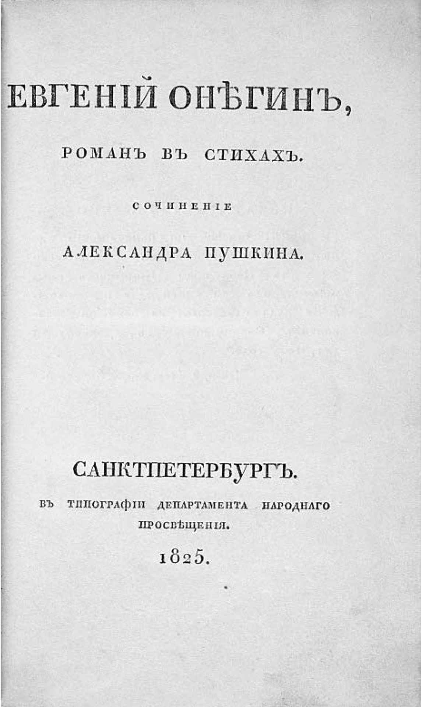
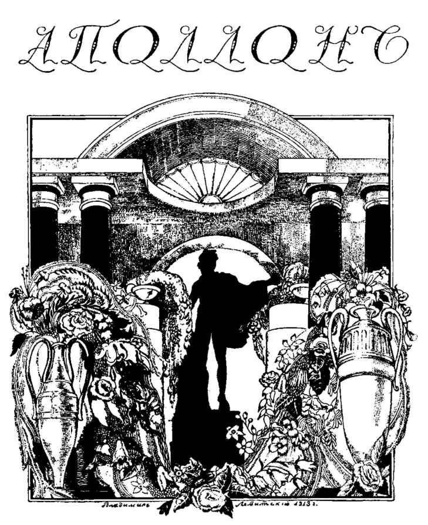
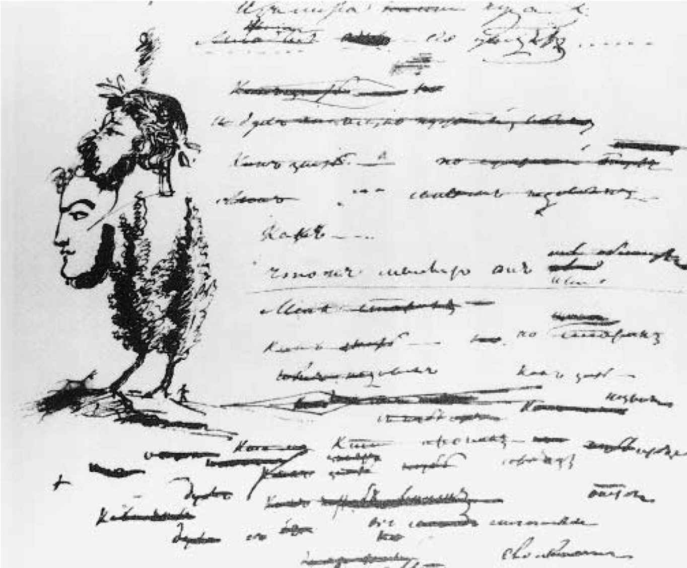
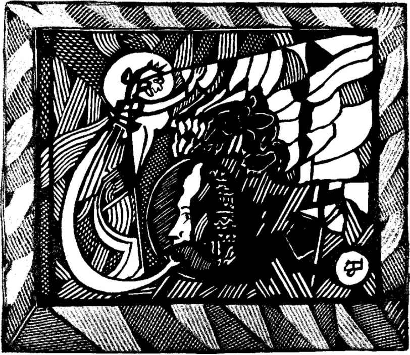
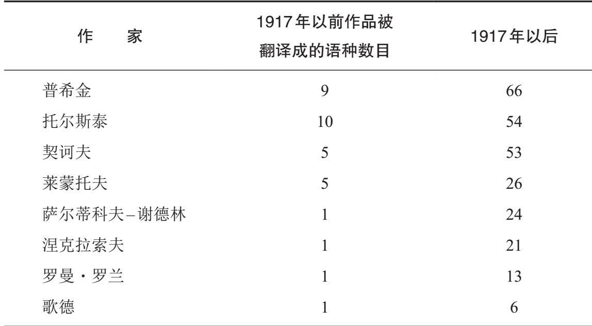
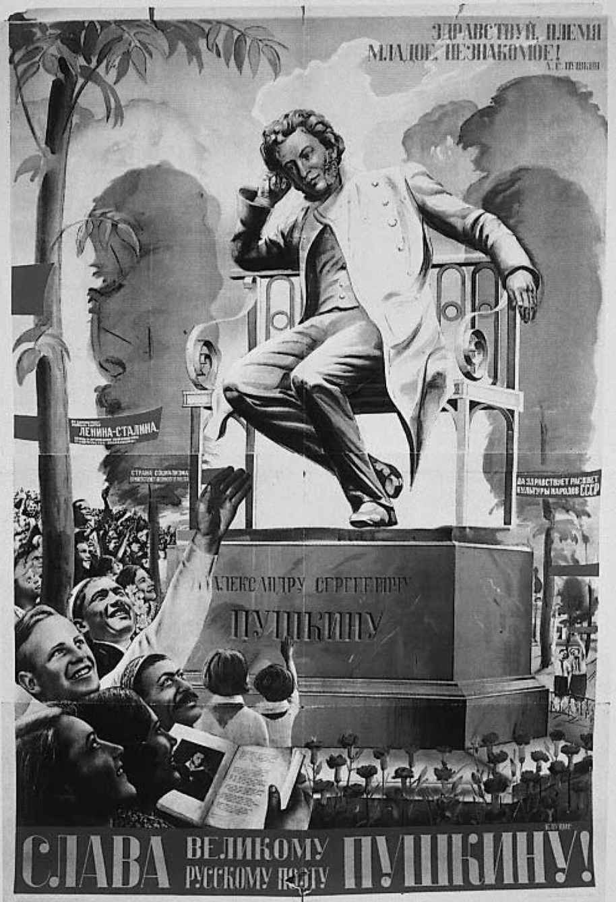
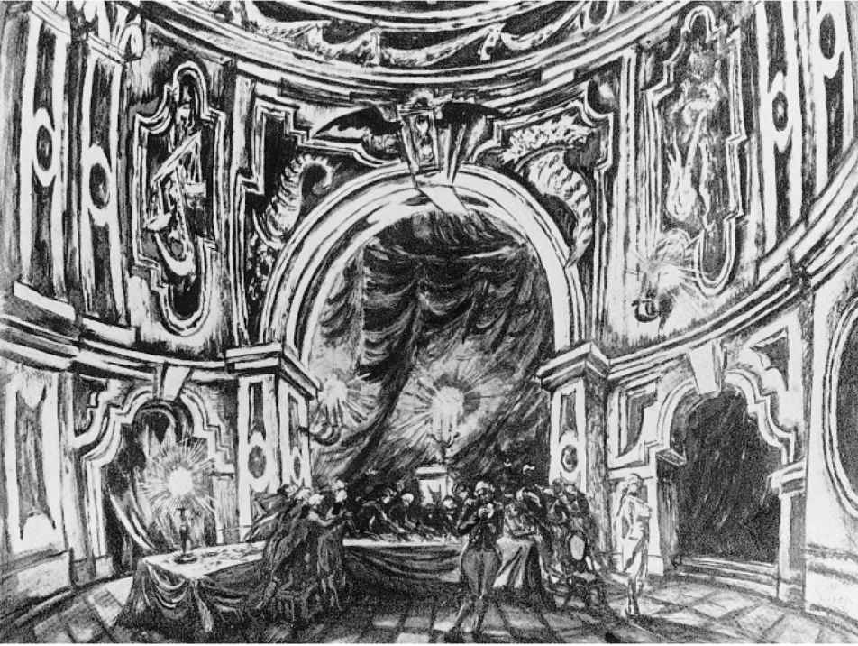

（薇拉·潘诺娃，《作家笔记》，1972年）
让作品成为自己的“纪念碑”，不仅是普希金在难以忍受的孤独中聊以慰藉的梦想，也是他念兹在兹的一项事业。他是最早把自己分散出版的作品集结成一部《全集》的俄罗斯作家之一，他精心规划《全集》的内容和排版，还修订了早期的一些诗作，将它们收录进去。在俄罗斯，如此煞费苦心地传播自己的诗作无疑是前所未有的。直到17世纪末，文本制作都是由东正教会垄断的，作家们发挥的作用跟圣像画家差不多。很多文本（如祈祷文）都是匿名发行的，作者对于抄写过程和他们提供的素材在编纂中如何使用没有发言权。作家的圣洁和对神学的精通决定了他们作品的价值，只不过为此目的，修辞力量也起到一定的作用。印刷术在17世纪的传入并没有立即改变这一状况，因为新技术一开始也是用于印制宗教书籍的。在世俗印刷文化于18世纪出现后，一开始，书名比作者重要：翻译作品通常要么匿名出版，要么张冠李戴，抄袭和盗版屡见不鲜。
不过到了18世纪末19世纪初，情况总算有了改观。图书审查制度相继在叶卡捷琳娜二世、保罗一世、亚历山大一世和尼古拉一世治下逐渐强化，个人作者身份这一概念得到强调。究其原因，不仅是要让作者为自己所写的东西负责，而不提倡匿名出版（1848年，明令禁止杂志发表未经署名的文章），也是因为审查委员会除了发挥惩戒作用外，还须负责版权执法。引用一条官方法令的话说，他们应该“禁止出版商未经授权随意出版那些与其毫无关系的作者之书籍”。与此同时，图书审查员的出现促进了自我意识的提高，因为他们是既对作品带有敌意，又有艺术鉴赏力的读者（19世纪有几位大名鼎鼎的审查员本人就是作家，包括伊凡·冈察洛夫，他的著名小说《奥勃洛莫夫》刻画了一个整日赖床不起的人物形象）。于是作家们需要不断超越审查员，这刺激他们广泛采用各种花样翻新的寓言式写法。例如把故事的场景设在西班牙法庭上，实际上却是指俄罗斯法庭，或者提到《哈姆雷特》和丹麦国的腐败来暗指国内的某个地方。作家们使用这种所谓的“伊索式语言”也鼓励读者（当然还有审查员）在作品的字里行间读出其隐藏的深意。
同样，在19世纪初，书商们开始意识到作家“品牌”的市场价值。他们开始签订合同，合同授予一位出版商某一文本或文集的独家权利，作为回报，他本人与作者平分利润。1834年，普希金与A. F.斯米尔金就两人都看好的一本书，即历史小说《上尉的女儿》，签订了这样一份协议。1836年，他又创办了一个文学期刊，名为《现代人》，不但为自己的作品提供了一个讨论平台，可以直接掌控作品面世的方式，也创造了一个获得商业回报的良机。

图7 《叶甫盖尼·奥涅金》第一章的封面
因此在普希金看来，著述在一定程度上就意味着个人要谨慎地把握在公众面前发表言论的方式。他还认为，写作作为一种职业，尽管不够气派，起码有助于获得足够养活一位绅士的收入。然而他还把写作看作一种文化领导力。俄罗斯需要能和法国、德国或英国文学分庭抗礼的文学，而当时尚没有像样的本土文学传统，这为普希金和他那一代俄罗斯作家设定了明确的任务。在他们看来，俄罗斯的文学图景就像普希金在《青铜骑士》（1833）的“楔子”中提起的荒凉北部，到处是“寥廓的海波”、幽暗的树林和铺满青苔的潮湿的岸沿。单调乏味，而非杂乱喧嚣，正是文学创作的先兆和刺激物。普希金在1824年高调地宣称：“我们既没有文学也没有［好的］书籍。”虽然他也承认各位文学前辈的功勋，包括杰尔查文和伊凡·克雷洛夫（因活泼生动的寓言闻名遐迩），但显然，这些人中没有一个是浪漫主义意义上的“天赋异禀”（Naturgenie ），因而没有一个称得上是民族的骄傲。在一年后写的一篇文章中，普希金明确否定了天才科学家和先驱诗人米哈伊尔·罗蒙诺索夫有权获得这一殊荣，称后者不过是诗歌匠人：“他把写诗当作消遣，或者往往是出于一种严峻的责任感的练习［……］在我们国家的首位诗人身上，我们竟然看不到喷薄而出的情感或想象力的爆发。”

图8 1913年第六期《阿波罗》的封面
这些评论源自普希金心中暗想的关于自己在俄罗斯文学文化中所处地位的问题；它们表明，他已经逐渐意识到，既然大家都强烈地感觉到俄罗斯缺一位民族诗人，自己便有可能正是这样的人。他不同意一位同代人的观点，即伟大的诗人都是横空出世且玄妙莫测的，他们的荣光必将带来一段时期的衰落。普希金认为，恰恰相反，一个平庸的时代或许才是伟大作家的创作所必不可少的准备。难道埃斯库罗斯之前没有希罗多德，奥维德之前没有卡图卢斯？虽然顾及教养，他没有直说杰尔查文与自己或许也是同样的关系，但从1825年开始，普希金偶尔会称自己为大写的“诗人”而非一般作诗的人——打个比方，正如1827年那首著名的诗作中，那个被阿波罗选中的牧师。但他对自己的看法始终充满矛盾［正如他在关于东方的诗歌《护兵》（Tazit ，1830年）的稿纸空白处画的那幅涂鸦所暗示的：那是他的半身自画像，本来戴着一顶桂冠诗人花环，他又用浓黑的墨水把那顶花环抹掉了］。他生前志存高远，最终信心倍增地为他加冕诗坛桂冠的却是其他评论家，尤其还是在他1837年悲惨死去之后。
最重要的一刻是赫赫有名的多产评论家维萨里昂·别林斯基在1838年宣称：“每一位受过教育的俄国人都应当拥有一部普希金全集，否则他就没有资格声称自己受过教育或声称自己是俄国人。”
每到普希金周年庆典，这类解读都自然而然会成为热点。举例来说，在1880年莫斯科那座普希金纪念碑建成之时，作家们发表的演讲不仅包括陀思妥耶夫斯基著名的爱国讲话，也包括屠格涅夫的致辞，他在其中赞颂普希金集两项成就于一身：创造了一种全新的语言，并开启了一个文学传统——在其他国家，这两者没有同时发生，亦未由同一个人完成。普希金的成就彰显了俄罗斯的伟大，也构成了这个国家独一无二的特性。
屠格涅夫的民族自豪感没有多少事实依据。歌德在德国、密茨凯维支在波兰、吴克·卡拉季奇在塞尔维亚的角色至少跟普希金在俄国一样重要。俄罗斯的文学高潮绝非当世无双，而是席卷全欧的知识大潮的一部分，此前各自孑然独立的文化支流汇入欧洲知识主流。可见屠格涅夫的观点站不住脚，何况他行为乖僻，晚年大部分时间都在国外度过，跟那些出入他居所的名人用法语交谈，但这些都未曾减损他这话的可信度，随着时间的推移，其分量不减反增。在1899年的周年庆典中，对“民族诗人普希金”的崇拜事实上主要是为了迎合尼古拉二世那个保守的民族主义政府的口味。给街道改名和向中小学生分发纪念品的倡议用官方宣传的爱国主义绑架了俄罗斯作家，同时也把他们绑架在了晚期俄罗斯帝国政府致力于教育俄罗斯民众的新近承诺上。

图9 《护兵》（1830）的草稿，普希金。他头戴桂冠花环的自画像被涂抹掉了
当然，普希金崇拜并非没有遇到阻力。托尔斯泰那本著名的小册子《艺术论》（1898）就是一例，他在其中不遗余力地讥讽人们居然把普希金这么一个花花公子和好色之徒塑造成民族圣贤。更早以前的1860年代，德米特里·皮萨列夫等激进批评家在抨击浪漫主义诗歌而鼓吹政治散文时，也曾把矛头直指普希金。皮萨列夫以普希金那首恢弘壮丽的诗作《一八二五年十月十九日》为例（这首诗感人至深地忆及诗人与同学威廉·库亨贝克的文学友谊），说明诗歌不过是以多余的复杂形式表达浅薄的思想：“如果用简明扼要的散文来诠释这通篇押韵的胡言乱语，那就只剩下这单薄苍白的一句话：‘你和我都曾胡乱写诗；我把自己的诗付之梨枣而你没有；如今我也不打算再把诗作印成文字了。’”有相当数量思想激进的读者，特别是那些出身工人阶级自学成才的知识分子，持有与皮萨列夫相同的保留意见。一位传记作家记得，在1910年代，他的一位工友曾说：“你的奥涅金和你的连斯基［……］真应该被送进工厂，干点儿把气缸固定在钳座上的活儿。”对于这类读者，马克西姆·高尔基那部讲述一位平凡的母亲因为沙皇当局的残暴而获得政治觉醒的政治宣传小说《母亲》（1906），可要比《叶甫盖尼·奥涅金》感人多了。
俄国革命之后的最初几年，这些疑虑曾有过很大的体制分量，那时“阶级战争”的官方意识形态在文学–历史学界一统江山。在投身那场战争的人看来，普希金不过是个才华出众的反动文化精英。大多数所谓的“左翼分子”也崇尚小说（特别是现实主义小说）而看不起“通篇押韵的胡言乱语”。意味深长的是，由高尔基发起、1933年开始面向大众市场出版、催人奋进的“名人生平”系列，首批传主是契诃夫、果戈理、18世纪思想激进的持不同政见者亚历山大·拉季舍夫以及无情鞭挞特权阶级的讽刺作家萨尔蒂科夫–谢德林，但没有普希金。同样，1934年苏联作家代表大会上的主题发言除了突出高尔基和托尔斯泰现实主义小说的卓越贡献之外，也着重强调了别林斯基、尼古拉·车尔尼雪夫斯基和尼古拉·杜勃罗留波夫等“进步主义”评论家的杰出成就。直到1949年，由苏共领袖、老布尔什维克、工人出身的米哈伊尔·加里宁为苏联大众开列的必读书单也只包括了罗蒙诺索夫（自学成才者和科学天才的杰出典范）、“革命道德楷模”拉季舍夫、别林斯基和杜勃罗留波夫，唯一一位充满想象力的作家典范是激进诗人尼古拉·涅克拉索夫。
直到苏联时代结束为止，“进步性”仍然是判断已故作家的作品应被公认为“经典文学”的首要标准，所谓“进步性”是指他们持有能被表现为苏维埃思想先兆的观点。车尔尼雪夫斯基那部关于妇女解放的冗长乏味的公式化小说《怎么办？》（1863）自是充满了“进步性”，陀思妥耶夫斯基的《群魔》（1871—1872）却没有，以至于《苏联大百科全书》第二版给它贴上了“恶毒诋毁俄国政治解放运动”的标签。托尔斯泰的《战争与和平》倒是有“进步性”，但《安娜·卡列尼娜》就差多了（从苏联官方角度来看，这无疑是一部二流小说，因为很遗憾，奸情占据了大量篇幅）。涅克拉索夫的社会批判诗歌显然是进步的，但俄罗斯象征主义和后象征主义的“唯心主义”作品绝对不是。《火花》这样原则性强但文学价值着实有限的激进期刊有着显著的“进步性”，而20世纪初那些艺术追求高远（政治上偏向自由主义）的现代主义期刊，如《阿波罗》和《天秤座》则根本没有。因此，在苏联处于领导地位的苏联作家出版社所出版的最有声望的诗歌回顾系列“——诗人文库”，是从前者而不是后两者中选取诗作的。
一旦涉及18世纪文学，强调“进步性”就显得尤其吊诡。在“反动的”叶卡捷琳娜二世（她本人就是俄罗斯最早的女性作家之一）统治时期，俄语文学创作要比“进步的”彼得一世统治时期高产得多，这已经够糟了；更令人尴尬的是，大多数俄罗斯作家本人气质保守，更愿意为赞美专制的宫廷抒写颂歌而非抨击农奴制度。因此，从1930年代初到1980年代末，大多数18世纪的俄罗斯文学根本就不再重新出版发行了，在这一时期，针对大众市场出版的书籍（不同于1890年代到1920年代出版的书籍）仅限于少数几个人物。除了拉季舍夫和罗蒙诺索夫外，尚可接受的少数作家包括文学记者尼古拉·诺维科夫（当局把他塑造成神话，说他是叶卡捷琳娜二世政治审查制度的殉道者）。另一方面，尼古拉·卡拉姆津则被宣传成“上流社会的感伤主义者”，他的大部分作品被封存起来：例如，他的杰作《俄罗斯国家史》（1818—1829）全书直到1980年代末才再次出版面世。想知道这有多荒谬，不妨想象一下，一份18世纪英国伟大作家的名单中只有托马斯·潘恩、玛丽·沃斯通克拉夫特和早期的华兹华斯，但因为政治立场可疑而不包括蒲柏、约翰逊、范妮·伯尼和汤姆森，因为品行不端而不包括斯威夫特。（事实上在斯大林时代，《格列佛游记》确实是作为儿童文学出版的，而且经过了极大的删减。）说到19世纪英国文学，我们也不必费心想象什么“进步”作家正典了，因为苏联翻译家们已经努力为我们实际拟定了一个。它包括雪莱（无神论者和民主人士的先驱）、彭斯（苏格兰的“人民诗人”）、威廉·布莱克（“撒旦的磨坊”的批判者而非不切实际的神秘主义者），以及鹤立鸡群的人物狄更斯。它绝对不包括简·奥斯汀（直到1950年代末期才开始翻译）、乔治·艾略特（她在19世纪的俄罗斯极受欢迎）或艾米莉·勃朗特，更不用说杰拉尔德·曼利·霍普金斯或克里斯蒂娜·罗塞蒂了。
“进步”作家的正典既是静态的，也是灵活的。从苏联政权的开始到结束，托尔斯泰等作家一直保持着极高的声望；而普希金等另一些作家，其地位则经历了明显的变化。最关键的重新评定阶段是1930年代中期，官方宣布“阶级战争”已经结束，在家庭和教育政策上开始转向保守（当时出现的一系列变化被统称为“大倒退”）。除了结构变化外还有象征性的变化：因为越来越强调文化价值应超越社会环境，在建筑、音乐和绘画等领域出现了“古典”风格的复兴。无独有偶，1924年列宁去世时形成的列宁崇拜开始退潮，转而强调“苏联爱国主义”，这次的爱国主义运动围绕几位中心人物展开，他们的荣耀反射并进一步增强了“一切知识的领袖”，即斯大林本人的万丈光芒。1937年普希金去世100周年的纪念活动在这一连串过程的关键期举办，活动本身就被用于在艺术价值与政治进步性之间重新画上等号，转了一圈，一切又回到了原点。
1920年代，普希金被认为是艺术天分极高但观点可疑的人；从1937年开始，他被看作是一位才华横溢且政见卓越的艺术家，因极力反对农奴制度而成为专制政权的眼中钉、肉中刺。人们把他创办的那份表现平平的文学杂志《现代人》与它的后继者，也就是1840年代和1850年代由涅克拉索夫等人创办的同名政治期刊混为一谈。强调他与1825年十二月党人起义组织者之间联系的重要意义，以及他对持不同政见作家的崇拜，几成惯例。普希金委员会会刊在1937年大张旗鼓地刊出了《“纪念碑”》的草稿版。该草稿版表明，在最初版本中，该诗最后一节有这样一行：“我跟着拉季舍夫一起歌唱自由。”学者们很早以前就知道这行被删除的诗句，它与那首诗的其他句子一样含糊不清、模棱两可（众所周知拉季舍夫是自杀而死，一个可能的解释是，普希金在呼唤他所行使的结束自己生命的自由）。而这一行被删除的事实，也让基于诗行本身所作的任何解读变得可疑。不过，为了虔诚地重现进步主义的普希金，这句诗居然一步登天，变成了决定性而非试探性的话语。正如一位评论家在1962年所说的：“到了1937年，在普希金惨死的百年纪念活动中，他的‘遗嘱’的真正含义才大白于世。”

图10 《梦中的普希金》（1937），阿列克谢·列米佐夫
把普希金说成是一个“前瞻性人物”成了不容任何人干扰的绝对命令。在1940年出版的普及版皮萨列夫文学随笔集中，干脆漏掉了《普希金的抒情诗》，也就是本章前文中引用的“通篇押韵的胡言乱语”的出处。那篇文章只出现在宏大的版本中，例如1955—1956年的《皮萨列夫全集》。同样，普希金在1830年之后政治倾向明显变得保守——开始捍卫农奴制度，且越来越坚信启蒙思想的传播必须依靠专制统治——也成了苏联学术专家们忌讳的话题。反过来，普希金如今被看成是“了不起的俄罗斯文学之父”，在文坛的地位相当于政坛上的彼得一世，也成了18世纪文学黯然失色的原因之一：国父，顾名思义，不需要先祖。
“国父”崇拜的另一个结果是，普希金日益成为堂而皇之的沙文主义题材。“普希金是天才中的天才”这一主题本已是1937年普希金去世百年纪念的弦外之音，后来又成为翻译政策的言外之意。一份1945年出版的表格中列出了在革命之前和之后，各位伟大作家的作品分别被翻译成了多少种语言：

到1949年普希金诞辰150周年时，这一主题已经上升为震天号角，也就在那时，冷战爆发，反对“无根的世界主义”的反犹主义和排外主义运动也开始了。苏联科学院一位院士发表的两次讲话（也被印成小册子分发）把普希金说成是既“吸收了此前俄罗斯国内外一切文化之精华”，同时又充满了“民族自豪感”，且预见性地“严厉斥责世界主义”及“唯美主义和形式主义”的人物。当然，说普希金认为“世界主义”十分丢脸，就让分析普希金与西方浪漫主义文学之间矛盾但亲密的关系等问题变得无从下手。同样，一旦认为俄罗斯文学拥有极大的价值和个性，也就没法分析俄罗斯对感伤崇拜或现代主义等泛欧洲文化思潮的贡献。从1948年到1956年，关于这类话题的严肃讨论几乎绝迹。俄国激进分子对《叶甫盖尼·奥涅金》的崇拜（别林斯基更是高调宣称这部作品“写尽了俄罗斯生活的点点滴滴”，这当然是不实的夸张）被引为实例，证明普希金成熟地认识到了浪漫主义的局限性。这部小说与“浪漫主义反讽”的做法如出一辙（堪比拜伦或海因里希·海涅的作品），对浪漫主义情感和人物典型的态度模棱两可，这一事实被彻底忽略了。而把普希金的小说《上尉的女儿》解读成毫不含糊地批判叶卡捷琳娜二世对农民起义者普加乔夫的“残暴”镇压，则是彻底无视它与沃尔特·司各特的《雷德冈脱利特》的相似性，两位作者都认为，只有在以理性的集权主义替代不可靠的暴君时，被压迫者的反抗才算取得成功。
除了将普希金塑造成苏联文学的始祖和国家至上主义的宣传工具之外，斯大林主义政权的另一个重要野心，是把普希金打造成“民族—大众”意义上的“民族作家”：一个为整个民族而写作的作家。早在1920年代，就已经开始了一次大范围的运动，旨在让新读者有机会首次认识俄罗斯经典文学。各类读者调查急切关注着无产阶级和农民对这些作何反应。那些调查本身产生了非常多样化的结果，但对结果的分析一般都会简化材料，得出一个明确直接的结论：现代主义让普通民众无法理解，而经典则是平实易懂的。正如一位俄国农妇在1926年的一项调查中所说的：“至于《‘纪念碑’》？怎么可能读后无感呢？”
这类说法不光是为了通报意见，也是为了影响观点。这是苏联“大众读者”阅读伟大的文学时应有的反应。因此，官方就必须向他们提供可能诱导这类反应的那种文学。从1930年代中期开始，俄语经典再次成为学校文学教育的核心，教科书聚焦的素材都是既平实易读，又道德高尚的。学生必须背诵《叶甫盖尼·奥涅金》中达吉雅娜的那封信（达吉雅娜被认为是苏联女性的典范），以及屠格涅夫赞美“伟大的、了不起的俄罗斯语言”的散文诗。教科书没有选择莱蒙托夫在生命最后几年写下的充满心理纠结与愤怒的诗歌，抑或这位作家抱怨他“悲哀地望着他那一代人”并向“满目污垢的俄罗斯”致以不受欢迎的诀别的尖刻诗歌，却收录了那些让人们想起俄罗斯帝国之宏大规模的象征性自然诗歌，或者诸如《两个巨人》这类鼓动性的爱国诗篇（诗中的俄罗斯巨人打败了他的敌国），以及让人想起俄罗斯在1812年打败拿破仑的《博罗季诺》。因此从童年起，俄罗斯读者们就在自己的头脑中珍重地携带着一部由这类诗歌组成的诗集，以及学校里教授的关于散文经典的知识（例如果戈理1841年的那个关于悲惨的公务员阿卡基·阿卡基耶维奇的故事——《外套》）。对伟大作家的解读跟可供研读的作品选一样乏善可陈。学生们不得不写说教气十足的人物分析，比方说他们会这样评价普希金的杜布罗夫斯基：“他常常放纵自己的暴脾气。”他们不得不回答“契诃夫有何重要意义”这样的考题，答题时必须歌颂作家预见到布尔什维克革命（这一发生在他死后13年的事件）的先见之明。回答这类考题需要的是套话而非独立思考。正如评论家和儿童文学作家科尔涅伊·楚科夫斯基1963年谈及苏联的学校作文时所说的：

图11 1937年普希金庆典的海报，V.克鲁西斯。画中打开的书页上显示的诗歌似乎是《“纪念碑”》
从1930年代末到1960年代初，这些评论不仅适用于学校作文（教育系统里这种情况一直持续到苏联政权崩溃），也适用于著名的专业评论家和文学史专家为公众撰写的文章。
与谄媚同道的，还有对任何可能有颠覆性的生平细节的压制，例如普希金嗜酒如命，沉溺嫖赌，酷爱醋栗果酱，而托尔斯泰对上述四样中的至少三样同样偏爱有加。高尔基长期待在国外也是个令人难堪的禁忌话题（和其他遭到流放的俄国公民一样，据其定义，1917年之后离开俄国的作家也被认定为不够“热爱祖国”）。荒淫不检则是更敏感的细节。苏联为了向地位崇高的一流作家致敬，指派大量人员参与编纂并出版了注解繁多的所谓“全集”，但很少名副其实。即便某一位作家写过的每一部现存文本都以某种形式得以出版，某些篇章也必然会遭到删减，而且这些删减本不一定都有谨慎的标记，诸如代替普希金本人不顾廉耻地直接写下的语词的星号（比方说用*****代替“妓女”，或者用****代替“屁股”）。怀抱虔诚也是传记作品强调的重点。直到1963年，一位博学且相当开明的苏联作家还表示欣慰：虽然A. L.罗斯 [13] 的作传视角相当粗俗，但他总算“彻底清除了任何关于莎士比亚是同性恋的疑虑”。在小说《癌症楼》（1968）中，亚历山大·索尔仁尼琴不无道理地讥讽这种得体地写书颂扬名人生平的行为，称之为“事无巨细地考证某某伟大诗人于一八几几年坐马车经过的是哪一条村道”，也就是貌似客观地报道那些或许极其乏味无趣，却既没有政治争议，也不会透露任何“淫秽琐事”（poshlyatina ）的事件。
自“庸俗社会学”在1930年代末遭到谴责之后，就绝无可能把普希金解读为“俄国小资青年的诗人”（D. S.米尔斯基1934年的说法）了。不过为了把作家还原到其时代背景中进行“深描”而对账簿、私人信件、日记、回忆录等各种微不足道的档案资料所进行的深入研究也就此终止。相反，那些反对“清单式”批评、反对根据社会阶级对作家进行肤浅分类的形式主义学者，他们的工作只能以淡化的方式继续。《征服果戈理》（或其他任何被公认为“伟大”的作家）这类命题研究承认，跟意识形态相反，写作技艺至少在有些方面或许还是有分量的。对最受尊崇的文学文本，其研读方式跟斯大林讲话没有什么差别，后者本人就很喜欢显摆自己熟读经典，比方说，把所谓“人民的敌人”称为“犹杜什卡”（此称谓来自萨尔蒂科夫–谢德林笔下猥琐虚伪的犹杜什卡·戈洛夫廖夫）。这些经典似应为每个人所熟知，但并非每个人都有资格对经典进行深入讨论，除非拥有能跟苏联科学院某个研究所的学者进行对话的特别学者许可，否则就和援引错误作品一样，无疑属于不当行为。
对经典文学的谄媚和死记硬背，其效果倒不一定都是负面的。首先，背诵并不是苏联的发明，就像把文学作为世俗宗教也并非苏联独有。早在革命之前，初中在校学生的课业就要求他们必须背诵罗蒙诺索夫、普希金和莱蒙托夫的作品了。在最理想的情况下，这给了俄国成年人一种对文学充满喜爱的熟悉感，常被用来证明此人有着良好修养。19世纪和20世纪的俄罗斯作家（及各类艺术家）可以指望他们的绝大多数读者了解文学典故，哪怕那些典故经过层层改写。（互文性，也就是直接或间接引用，作为俄罗斯文学史学者的一个重要研究课题，与作家们成长的精神世界有着密切联系。）要是某个孩子公开指出屠格涅夫歌咏的“朴素而有力的俄罗斯语言”与苏联生活的关联在于这是压抑社会中唯一一个自由的领域（“要是没有你——想起家乡发生的一切，怎能不叫人绝望呢？”），那么他多半会被赶出教室，甚至被学校开除，但没有什么能够阻止学生私下里尽情探索文本中潜藏的颠覆性。
不过对于涉世未深的读者来说，学习“核心课程”的效果似乎不过是延续了某种文学民俗。那些关于作家生平的怪诞逸事因此而流传久远，1930年代的荒诞主义作家丹尼尔·哈尔姆斯曾戏仿这类故事，他“关于普希金的遗事［原文如此］”中就包含“普希金喜欢丢石头”之类无关紧要的遗珠。日记和信件等文件表明，人们对“中肯箴言”或套话的引用要比对经典文本的研究和细读常见得多。一个在情书中错引了莱蒙托夫的少妇（“寂寞又忧愁，我该握着谁的手”，而不是原文中的“有谁可以和我分忧”）或许对她错引的那首诗一无所知。她大概是通过某个中间渠道，如流行歌曲，获知这个引语的。
然而鼓励中学毕业生阅读有限的样板化经典文本，并将其视为文学创作的巅峰，以此为准绳来判断每一类作品的制度，最坏的副作用在于它促成了咄咄逼人的审美保守主义。苏联的庸俗市侩们并非对艺术一无所知，而是对投其所好的东西一知半解，他们据此沾沾自喜，认为自己完全有权将自己的喜好强加于人。大量学生毕业时只熟悉玛琳娜·茨维塔耶娃所谓的“永远欢喜的普希金，生命中唯一的成就就是死亡”，认定此人仅有的两部作品就是《叶甫盖尼·奥涅金》和《上尉的女儿》，还有两三首抒情诗。因此，难怪那些更大胆的作品即便通过了审查，也往往会引发某一类读者的大量来信，我们不妨称这类读者为“深恶痛绝的坦波夫”——那往往是苏联“小知识分子”的一员，某个小地方的教师或工程师，一看到有什么违背了他或她通过出版物而熟知的某种残缺的“俄罗斯经典文学”精神，便惊恐万状，为之胆寒。
因此，斯大林时代形成了一个极其狭隘的文学正典，不仅因为其中只包括少数几部作品，也因为对这些作品的讨论受到了格外严格的约束。始于1954年，也就是斯大林去世一年后的那次文化自由化，在文学和许多其他领域都是无计划、不彻底的。大体而言，它影响了学术界对普希金的解读，但即便在学术界，影响也相当有限。“普希金之家”，也就是位于列宁格勒的苏联科学院俄罗斯文学研究所，仍然保有出版普希金作品的特权地位，一位不友善的评论家不无公正地将其描述为“一小撮把持着垄断权威的普希金卫道士，就某一篇文章是否满足他们自己的目的而对其做出生杀予夺的决定”。无疑，文学和翻译出版领域已然显现出更大的多样性，且已经在文学批评和学术界初见成效了。1965年，在学者和批评家尤里·洛特曼的领导下，塔尔图大学开始出版“符号系统论丛”（Semiotike ）系列，即为一个重要事件。符号学家们关注在某个特定时间、特定文化中的意义问题，而不是文本对后世有何意义，这对传统的马克思——列宁主义强调进步性暗暗提出了质疑。（耐人寻味的是，洛特曼某些最出色的研究，关注的就是所谓“上流社会的感伤主义者”卡拉姆津。）符号学方法要求沉浸在过去，这也意味着作家的信件和日记本身再度作为文学或亚文学写作的一个体裁而得到重视，不再仅仅被看成是关于某个作家在何时对其小说、戏剧或诗歌草稿做何修改的资料库。

《黑桃皇后》的舞美设计12图
然而无论是在洛特曼等俄罗斯学者的研究中，还是在其西方同行的研究中，在某些方面，所谓适合考察的素材仍然是被严格指定的。普希金写给他的文学同侪的信件被彻底分析，那些信件游戏且警觉地塑造的他的其他人格也被记录下来，但作家给妻子和其他亲近之人的信件却没有得到什么详细探讨，因为既然这些素材不是为出版而写，那么它们就只“对传记作家有用”，对文学史学者却没有什么意义。人们对俄国上流社会进行了透彻的分析：符号学家们以《叶甫盖尼·奥涅金》中的两句诗——“通达的人，我们承认，也能够/想法子使他的指甲美丽”——为线索，分析了几十个被马克思—列宁主义因强调精神生活而忽略的领域，从“花语”到决斗的习俗。然而彬彬有礼还是主流，虽然多部回忆录显示，和任何其他人类社会一样，19世纪初的俄国社会充斥着虐童、乱伦、强奸、暴力，以及下流粗鲁等上不得台面的不端行为，当时却不允许讨论这些话题，以免混淆视听，阻止人们继续把普希金及其同代人所处的那个“黄金年代”奉为审美灵境。换句话说，这样一个解读传统在力图追溯19世纪初俄国生活的传统的同时，往往会复制作家们自己曾一度抗拒的属性。即便在这类开明的俄罗斯学者看来，理查德·霍姆斯 [15] 撰写的柯勒律治传记大概也是琐碎且令人恶心的胡说八道，他说诗人在写作那些超凡脱俗的作品时，始终在对抗便秘等绝对世俗的苦痛。从某些方面来说，这反映了作家们本人超越肉体性的决心。诗人尼古拉·克柳耶夫病入膏肓，长期卧床，又受到斯大林主义的迫害，便只好以这样的想法安慰自己：“圣人之所以为圣，就是因为他们忍受苦痛且能够超脱［……］有些人的灵魂就像号角，只有当灾难发生时，受难天使才会吹响它们。”而学者们拒绝关心个人的伤痛——失恋、离婚、性苦痛等——但有些作家偏偏一门心思书写这类主题，也就成了相关研究工作的一重障碍。形式主义的理论——即便在经历的同时，作家们也自觉地把个人体验塑造为艺术（俄语还为此造了一个词：zhiznetvorchestvo ）——忽略了一个事实，即有些作家的灵感来源恰恰是生活本身不愿轻易屈从于这样的重塑过程（具体实例就包括本书第六章讨论的女性作家）。
即便在对知名作家的“独特个性”的兴趣猛增之后，也极少有人关心“缺点”：作家生平的写作并非西方意义上的“传记”，而是旨在陈述某一作家的“创作道路”（关于克柳耶夫的权威传记就刻意避开讨论诗人的同性恋逸事，而专注于他和其他作家及杂志编辑建立的艺术关系）。主要任务是把作家生平写成一条关于苦难和凯旋（podvig ）的圣徒道路：偏离这一模式会引发激烈争论，俄裔美籍评论家亚历山大·左尔科夫斯基对安娜·阿赫玛托娃生平的修正主义解读就是一例。左尔科夫斯基指出，阿赫玛托娃将自己在政治和个人生活方面遭受的苦难看成是一种个性的标志，并力图强调和拔高这一标志。她不仅仅是一个被动无辜的受害者，也在积极地寻求苦痛。她把他人用作冲突的工具（她不断与已婚男人发生关系就很值得关注）和悲叹的共鸣板（左尔科夫斯基提请人们注意阿赫玛托娃对观者的强烈渴望，她屡次强迫朋友们在她需要时放下手头的一切来看她，就是证明）。《星》，也就是刊登左尔科夫斯基这篇文章的那本文学期刊，随后便登出另一位俄裔美籍评论家的愤怒回应，指责左尔科夫斯基合谋和赞同对阿赫玛托娃的压迫：
“只有在一个安全的时空距离之外，才能如此镇定地超脱人类苦难，书写历史和文学。”传记写作仍被大多数人看作是需要道德承诺、需要近乎谄媚的尊重的体裁，哪怕是学者撰写的传记也不能免俗。
1990年代末，关于作家生平的防卫心理不减反增，原因是人们担心俄罗斯文学失去了传统上在俄罗斯文化中所处的主流地位。1998年，一位在开明文学期刊《大陆》上撰文的随笔作家便提到，俄罗斯电视台为庆祝那年由鲍里斯·叶利钦官方确定的俄罗斯节日“普希金日”，只播放了“由半裸的前卫舞者们表演的拙劣芭蕾”。他列出了一连串指责俄罗斯媒体“没有文化”的实例，这只是其中一项。鉴于电视台为了给1999年普希金200周年诞辰庆典造势，事实上播放了几十个虔诚尊敬的节目，这样指控媒体显然很不公平。但这一事例表明，普希金变成了另一种保守主义的傀儡：这一次是一个四面楚歌的知识阶层的保守主义，他们觉得比起苏联统治时期，文化在后苏联时期面临着更加致命的威胁。在塔吉亚娜·托尔斯泰娅的未来主义小说《野猫精》（2000）中，核爆炸之后的莫斯科居民被判以闹剧形式永远再现苏联历史，一位热心而蒙昧的爱书人便立起了他所谓的“一个普希金”，即一座木制雕像，献给那位一度存在过，但已差不多被遗忘的文学神祇。但这部小说一面嘲讽碑铭主义，一面又把对伟大作品的了解作为衡量真正的文化素养的尺度：后爆炸时代的独裁者背信弃义，他所控制的新原始文化贫瘠匮乏，这些都是通过这位独裁者谎称普希金、莱蒙托夫和勃洛克的名诗是自己的诗作这一事实来表现的。又一次，作品和作家的诚信正直代表了全社会的道德自律。
本章探讨了文学作品在俄罗斯传播的问题。开头先提出了作家对自己的作品有无支配权的论题，审查制度有时会帮助作家获得支配权，但更多的时候会起到阻碍作用。审查制度有时会刺激文学生产，但它对读者质量的影响是毁灭性的，特别是在苏联时期，当时针对群众的教育和出版创造了一个全新的读者阶层，他们充满自信却认知有限，错把自己对经典作品的一知半解当成衡量审美标准的绝对尺度。虽然学术批评要凭借对基础素材有更广博的了解，但其本身也受到严格限制，1956年之前尤其如此。政治上有争议的素材必须极力避免，“粗俗”或“琐碎”的主题也不得关涉，如此就导致了对作家作品的删节，也让人们避开为作家作传，除非传记只关注某位作家的“创作道路”，也就是只关注跟单个文学文本的写作有关的思想经历。
本章的讨论不该被理解为每一个俄国人都必须在伟大作家面前表现出学校老师和政府官员所期待的虔敬。我们将在下一章看到，很多人，特别是其他作家，对德高望重者所持的态度都要大胆得多。不过即便在20世纪末，俄国人对经典作家的尊敬程度也要比西欧高得多，遑论美国；商业主导的价值观高歌猛进，它在整个俄罗斯社会，特别是新闻媒体中的蔓延促成了这一现象，同时也对其造成了困扰。